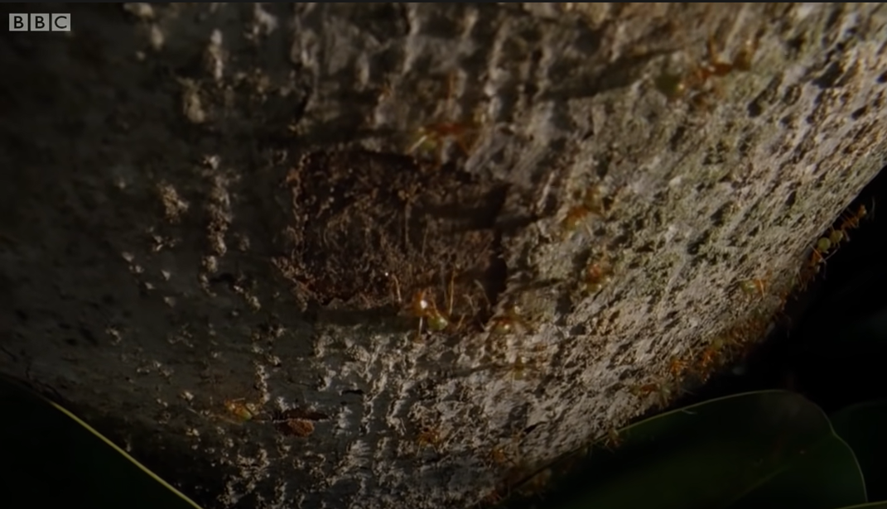
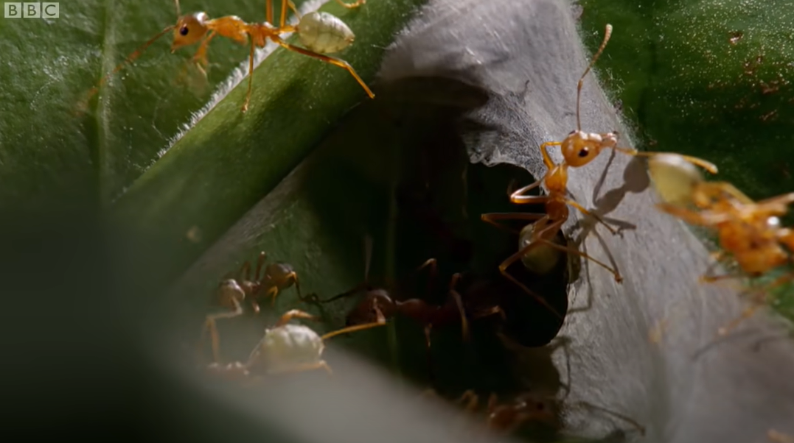
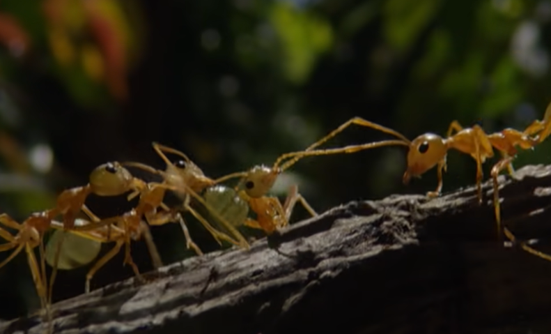
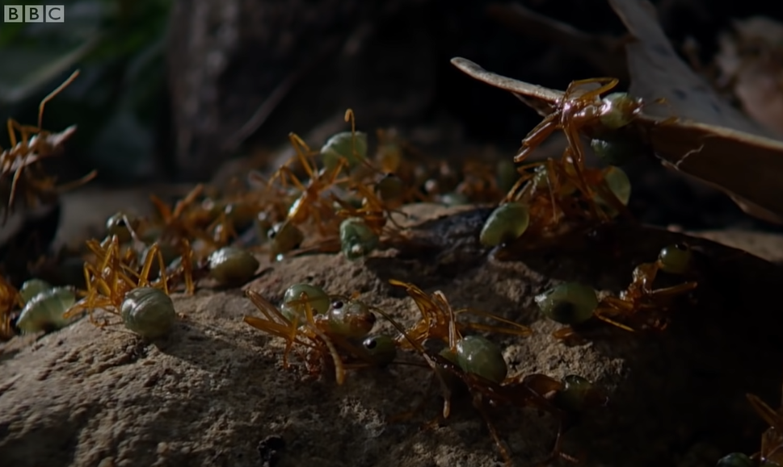

References and sources for this essay can all be found in the much longer companion piece, War as a system in nature (SSRN, personal site).
1 Ants fight wars
It’s common knowledge that ant societies are amazing. Ants are simple creatures, seeming to hae nothing in common with us sophisticated humans, yet somehow they grow crops and they herd animals for milk, (fungus and aphids or caterpillars, respectively). They build settlements that resemble our cities, with road networks, waste management systems, temperature control, and public health systems including the use of antibiotics.
And, of course, they fight what look like wars.
1.1 Weaver ant wars
Let’s get specific. Here is a two-minute video in which David Attenborough describes a colony of weaver ants in the Australian tropics battling to protect its fortress from another colony.
This conflict not only looks like a war, it also fits definitions of a war commonly used by social scientists. The key elements of all the definitions are scale, lethality (through the use of weapons), organization, and the fact that the conflict takes place between “political units”. For example, the Stanford Encyclopaedia of Philosophy defines wars as “large-scale armed conflicts between organized groups”.
Let’s walk through the weaver ant video again, and see how each of these qualities is satisfied. Attenborough’s narration is in the captions, and our commentary is side by side with the image.

Weaver ants live in colonies with up to half a million members. The colonies are in the tree canopies of tropical jungles, and they are dense enough that their well-marked and patrolled borders butt up against each other, in a similar way to nation states borders filling out the continents of the world. This territorialilty is one aspect of being a political unit.

The attacking colony is carrying out a coordinated attack. Weaver ants organize themselves to play specialized roles within a colony. The queen has a special role as the layer of eggs, but the worker ants are also organized into so-called “castes”. The minors mainly look after the brood, while the majors, which are twice as big and sometimes called “soldiers”, carry out other tasks. The border is guarded by older major ants. These are all aspects of organization, one of the characteristics of war.

Here’s another aspect of organization: a coordinated response. The pheromone signal calls out or “recruits” other ants to defend the colony; it’s a mobilization of defences through the use of signals, showing efficient and effective purposeful communication between different groups of ants within the colony.

In her 2021 book War: How Conflict Shaped Us, historian Margaret MacMillan says that wars are distinguished from bar fights by their scale. Here we have the potential for, and sometimes the reality of, hundreds of thousands of deaths if the colony falls – surely enough to qualify as “mass” violence.

This squirting of formic acid can kill multiple ants at a distance. It is, as Attenborough calls it, a weapon. So even though these are part of the body of the ant rather than being a prosthetic device, the level of lethality at work is enough to call these weapons.

Here again we see organization, in the form of coordinated action among the defenders as they drive off the invaders. We’ve seen specialized tasks (guards), coordinated large-scale actions (invasion, defence), mob/ilization, and small-scale teamwork. This is organized violence. Also: a component of the definition is that the violence (or at least the potential for it) is mutual. The war is between combatant political units. The home guard going on the offensive makes clear that the violence in this conflict is indeed mutual.

The two biggest names in the study of ants are surely E. O. Wilson and Bert Holldobler. They write that “The colony is the unit of meaning in the lives of ants. The workers’ loyalty to it is nearly total”, and here we see ants dying for the greater good and for the future of the colony. Surely these colonies count as political units.
In short, this weaver ant conflict has all the makings of what we would call a war.
1.2 Other ant wars
There are about 20,000 species of ants in the world, so there’s no one form of ant war. But weaver ants are not the only ones to engage in conflicts that fit this definition of a war. Here are some other ant wars
Wood ants live in the temperate climes of Europe, and form huge colonies with many queens and many nests, which expand until they border on each other. During winter the wood ants hibernate and boundaries between the colonies become blurred. In the spring they fight until boundaries are re-established, after which they commonly live side by side for the rest of the summer. Sometimes, it has to be said, they use the bodies of vanquished colonies as food to build up their nutritional stores after the winter.
Leafcutter ants construct the most sophisticated of all ant societies, and live in the tropics of the Americas. Their colonies have a single queen, perhaps five different castes of massively different sizes, and practise an elaborate form of fungus farming. They will skirmish with nearby colonies, but also have to fight off invading colonies of army ants, which don’t maintain a static nest but maraud through the jungle as a column of hundreds of thousands of ants on the move.
In the 19th century, Argentine ants were accidentally exported around the world on ships, and they have settled in so well in their new homes that they have established what are called “supercolonies”, with thousands of nests, thousands of queens, and up to a trillion workers. There is a massive supercolony, called the Large Colony, in California, from the Bay Area down to San Diego. Then there is a war in the San Diego area that has killed millions of ants each month for the last hundred years. By number of casualties, it is more deadly than any other known war.
One difference between ant wars and human wars is that all human wars are between members of the same species, but some ant wars, like those between the leafcutters and army ants, are between different species. Is this still a war? If you watched the Lord of the Rings and didn’t complain about the phrase “the War of the Ring”, you’ve already accepted the principle. Perhaps it makes sense to think of inter-species ant wars as “asymmetric warfare” between armies using different technologies and resource bases, like that carried out in Afghanistan over the last 20 years.
It’s still common to think of war as a uniquely human phenomenon. As epigraph to Chapter 1 of the book we mentioned above, Margaret MacMillan chose a quotation from Frederic Manning: “War is waged by men; not by beasts, or by gods. It is a peculiarly human activity.” She goes on to say that (p xi): “War raises fundamental questions about what it is to be human and about the essence of human society”.
But war is not peculiarly human. Humans have been fighting wars for perhaps 12,000 years, since the birth of agriculture. Ants have been fighting for perhaps 5,000 times longer than that. And if we count the number of wars or the deaths of organisms, the number of human deaths is a rounding error compared to those of ants. War has been, we could argue, a peculiarly formic activity for most of its history; one that humans have only recently started to learn. And if that’s the case, how can questions about war tell us about what it is to be human?
2 Asking questions about wars
Still, it is fair to ask “so what?” Isn’t ant war just a curiosity? A surface similarity?
After all, when we think about human wars, we do not seek simply to classify events as “war” or “not-war”. We want to answer urgent questions, like: how do wars come about? what effects do wars have? how can wars be avoided or limited? how are wars won and lost? Addressing these questions leads us inevitably to the worlds of international relations, social institutions, human history, ethics, human nature, the nation state, technological innovation, law, diplomacy, and more. Aren’t these, as MacMillan suggests, uniquely human topics?
So here is the next point we wish to make: all those questions we ask about human wars can be asked of ant wars too, and the answers are not so different.
As preface to this point, we’d like to highlight three themes that run through all these cases.
One is that, when it comes to ants, the causes of particular wars and effects of particular wars are not of such interest. What’s more interesting is that there is an ecosystem and its inhabitants, that generates what we might call a war system: particular forms of ant society which may coexist peacefully for extended periods but which also periodically erupt into actual wars, and which are shaped by those wars. There is a focus on the co-evolution of war and other aspects of ant societies. There is similar talk of human war too, of course: think of Charles Tilly’s aphorism “War made the state and the state made war”, but the perspective of war as a system is more obvious in the world of insects.
The second is that humans have, throughout history, tried to separate war from peace. This seems like a uniquely human thing to do. But we’ll see that ants too have found ways to draw “bright lines” between war and peace. Perhaps this has something to say about modern strands of thought that treat war and peace simply as poles on a “spectrum of conflict” with “grey zones” intermediate between them, or which reject efforts to control and limit war as wishful thinking.
The third is a perspective of “convergent evolution”. Here we don’t mean a biological determinism, but evolution in a broader sense. Here is a beautiful paragraph by Canadian author Ronald Wright, which was invoked by Gowdy and Kroll who wrote about ant agriculture:
What took place in the early 1500s was truly exceptional, something that had never happened before and never will again. Two cultural experiments, running in isolation for 15,000 years or more, at last came face to face. Amazingly, after all that time, each could recognize the other’s institutions. When Cortés landed in Mexico he found roads, canals, cities, palaces, schools, law courts, markets, irrigation works, kings, priests, temples, peasants, artisans, armies, astronomers, merchants, sports, theatre, art, music, and books. High civilization, differing in detail but alike in essentials, had evolved independently on both sides of the earth.
The similarities between Tenochtitlán and Madrid were not just metaphors or similes: the two developed independently, with a common underlying dynamic generating similar outcomes even in these two different environments. So, we would argue, war is a system that has developed independently to be hosted in both ant and human societies.
With those themes in mind, let’s take a tour around war studies. For social scientists, approaches to understanding war take place at three levels: the individual, the society of which they are a part, and the international system of nation states. We’ll look at each, starting at the largest.
2.1 The international relations of ant colonies
Ant colonies are neo-realist states
We start at the level of the international system of states. Neo-realism is one of several schools of thought in international relations. It treats the international system as anarchic, in the sense that there is no governing authority. It also treats each state as a black box (ignoring its internal structure) and as a “rational” actor pursuing its own self-interest in a “utility maximizing” game theoretic sense. Each state must act in the face of incomplete information about the intentions and resources of other states.
Weaver ant colonies inhabit an anarchic ecosystem of colonies, with no governing authority. Unencumbered by domestic politics or moral considerations, they act of out self-interest, with survival as the only metric of success. Ant colonies – or at least the colonies of territorial ants such as weaver ants – are the ultimate neo-realist nation state.
Does it make any sense to think of ant colonies as rational actors? After all, neo-realist nation states (or their leadership) take decisions, and weigh the costs and benefits of their actions. A “strategy” at the level of a nation state is the result of some form of deliberation, and of course ant colonies have no such deliberative qualities, no leadership to decide on a strategy, and no hierarchy to implement it. Yet ant colonies do arrive at similar behaviour even though they may travel along a different path. It has been known since the evolutionary biologist John Maynard Smith used game theory to understand animal behaviour that many results of game theory can be derived from two approaches: so-called rational decision making or evolutionary game theory. So there is no contradiction in saying that ant colonies act as rational agents despite their lack of ability to reflect and decide.
We find it interesting, as an example from an international relations perspective, that the well-guaded boundaries between weaver ant colonies may be stable for a number of years, during which time the colonies follow the old human adage “if you want peace, prepare for war”. But ants also show this prescription is fragile in the face of shocks. When a colony dies, or when particularly favourable conditions lead to population growth, wars break out, and they may be dramatic. We can think of individual wars as occasional changes in state of the underlying system from a cold state, characterized by military preparedness and well-defined, guarded boundaries, to a hot state, the change being precipitated by some shock to the ecosystem.
Ants are diplomats
Wars are costly events, and not to be undertaken lightly even by unsentimental neo-realist states. After a brutal war, even the victor may be left weakened and vulnerable. While the international system of human nation states may be anarchic, and while the intentions of other states may be uncertain, communication between states and intelligence gathering combine to help avoid unnecessary wars, and to avoid the unintentional escalation of small conflicts into all-out war.
Ants do not sit at tables and draft treaties, but they do communicate with the effect of avoiding or minimizing wars.
Weaver ants ensure that everyone knows where territories start and end. Each colony marks the edges of their territory with brownish spots containing territorial pheromones unique to each colony, and older colony members actively patrol and monitor this boundary. The area outside the boundary may become a strip of “no ant land” which other colonies actively avoid.
Other species deal with the problems of incomplete information in different ways. Australian meat ants live in nests near eucalyptus trees, with each nest being the focus of a well-defined network of trails and foraging sites that define a stable territory. The colonies range in population from 10,000 to over 300,000 ants. When meat ants encounter ants from other colonies, they raise their gaster (hind end) and “posture aggressively”, but rarely engage in violence. Meat ants also gather around food trees and engage in collective displays to warn off potential enemies. Like military exercises, these ritualized displays serve to demonstrate strength. As such, they help to solve boundary disputes and clarify each colony’s territory without the cost of conflict.
The “honeypot ants” of the southern US are more dramatic. They live in colonies with foraging areas that often overlap, and this leading to regulat confrontations with other colonies. To resolve these encounters, the honeypot ants stage “tournaments”, which involve hundreds of workers from opposing colonies and which last several days. Individual ants square off in contested zones and stage one-on-one confrontations, each of which last between ten and thirty seconds. These appear to be dominance contests, with posturing and pushing but little or no serious fighting. (“The ants challenge one another back and forth across the disputed field in the manner of medieval knights, one on one.”)
Bert Holldobler, who observed this behaviour, argues that these contests enable each colony to assess the size and strength of the opposing colony. It may decide which colony holds the resource, without too much violence. But also, if one colony concludes that it has superiority in numbers at a scale of ten to one or more, it may invade and destroy the weaker colony, carrying off worker ants and brood to their own colony.
2.2 War and ant society
The middle level of analysis is at the level of the state: its politics, its economics, and its social structure.
The military industrial complex
We have already quoted the well-known aphorism from historian and sociologist Charles Tilly that “War made the state and the state made war”, which captures the way that, over time, war has both shaped and been shaped by the organization of individual societies.
For ants, war is one of the forces driving the formation of new “castes”. Among ants, function is often connected to physical type or state and the term “caste” has been used for a long time, for better or worse, to express this convergence.
Among the workers, who are all female, the most common morphological types are minor and major, which have differing body size and other specialized physical attributes. The difference in size between minor and major nestmates reaches an apex in marauder ants, where the major ants may weigh five hundred times more than a minor, and where the minor may ride on the head of the major.
Consider three ant species of the genus Camponotus, which live in the southern United States and are subject to predatory raids by army ants. One species responds to raids by flight, evacuating the nest and carrying their brood with them. The other two species respond by fighting. All three species have “major” and “minor” castes, but in the one that flees the majors are only slightly larger than the minors. In those that fight, the majors are much larger.
Ants have also developed specialized weapon technologies such as the formic acid spray of the weaver ants. Other ants have specialized mandibles , or stings, sprays, and foams. Some ants even use chemicals that induce panic in a whole colony: a weapon of mass destruction. There are defenses too, such as the biomineral armour that enhances the strength of the exoskeleton in leafcutter ants.
Several species in south-east Asia, including one called Colobopsis explodens, have developed a dramatic technology: some minor workers have two large two glands filled with toxic secretions. During combat these ants contract their abdominal muscles and literally explode, in a kamikaze act, spreading deadly secretions onto the foe.
There is a symbiotic nature to the species’s investment in technology and their tendency to engage in war that mirrors the military industrial complex: those who fight will develop weapons, but equally, those who invest in weapons are the ones that fight. Across humans and ants, war has accompanied changes in society, developing increasingly specialized roles and communication techniques, changing the relationships among members of society.
Ants are patriots
Some sociologists have studied how nation states maintain political cohesion during the trauma of warfare by developing and promoting a culture of national identity. Nations develop a clear sense of who is part of the nation and who is not: an in-group/out-group separation. Patriotic discourses of common origin and shared blood relationship are common (terms like “motherland”) even when there is no historical or material basis for it. During a war, each side may produce propaganda to emphasize how different “we” are from “them”.
To return to the weaver ants: the colonies are too big for any kind of personal identification, so how do they know who to fight? For ants, the cue is a complex cuticular hydrocarbon (CHC) profile on the waxy surface of the hard outer cuticle. When ants meet, they sense each other’s CHC profile through their antennas. The CHC profile is sometimes called an “odour” although the sense involved is somewhere between taste, scent, and touch.
The largest supercolonies of the Argentine ant may have a million nests, and spread over thousands of kilometers. Move a”Large Colony” Argentine ant 800 kilometres from San Francisco to San Diego and she will still be “home”, accepted by surrounding ants. On the other hand, move an ant a few centimetres across an invisible (to humans) border in the outskirts of San Diego, and she will probably be killed by the members of the neighbouring Lake Hodges colony.
For decades it was thought that this cohesion of purpose among colony members was driven by kin selection. The most vocal proponent of that idea was the late E.O. Wilson, whose book Sociobiology became controversial for arguing that the same logic shaped human societies. What’s less well known is that Wilson later led a countercharge among biologists and questioned his own theories, saying that even in ants, kin selection is not enough to explain the behaviour entomologists were observing.
His alternative idea is that natural selection may operate at the level of the colony – the “superorganism” – rather than the individual ant. If that’s correct, then the CHC profile could be seen as a marker of cultural identity – a distinguishing characteristic that serves not only as a marker of identity but defines it, and which is actively maintained through exchange throughout the members of a colony. The colony is making a cultural investment in maintaining a common identity among its members: a social infrastructure of cohesion.
Nothing of what we say here depends on any particular evolutionary theory, we are just describing what entomologists observe, but the possibility that ant evolve cultures is one that seems compelling to me.
2.3 The psychology of ant war
Finally we go to the level of the individual. Human societies have historically separated warlike behaviour from peacetime. The men of some tribes who head off to war take part in rituals before going, to prepare them psychologically to take on a role that is different to that at home. The professional army is another way to draw a dividing line. Accompanied by ideals and myths of heroic behaviour.
In ants, there is also a trigger that sets off warlike behaviour on the part of individual ants. This is the use of pheromones and other recruitment behaviour that we see in weaver ants and many others. There are two domains of behaviour, with different norms, different characteristics.
Unlike in humans, essentially nothing is told of the experiences of ants. Do they have experiences at all? Here the practice of entomologists borrowing terminology from human wars comes to a halt. The contrast is dramatic. Self-sacrifice in wartime is seen, when carried out by humans, as an expression of bravery and nobility sufficient to prompt some of our most universal and challenging stories of what it means to be human. The same action carried out by ants is simply “stereotyped behaviour” with no implications of “intent” or internal states. The use of the words “alarm” and “excite”, both of which can also be applied to inanimate objects, is as close as most studies go.
It is not always easy to see where the stereotyped behaviour ends and intelligent decision-making begins. We are told, for example, that “one fire-ant worker straggling close by is enough to trigger a violent response” in the woodland ant: a cue and a stereotyped response. But the response evoked may be quite complex. The worker ant, having encountered the fire-ant and identified it, (i) touches it to acquire its odour; (ii) lays down a chemical trail; (iii) rushes up to nestmates one at a time as she hurries back to the nest. Then, as part of this same sequence of actions, both “soldiers” (majors) and ordinary workers quickly attack the enemy and kill it, after which they search the area for further members of the fire-ant nest. This may end the matter, but in some cases a wider engagement may take place.
Try as they might, entomologists cannot entirely escape interpretation. By avoiding any mention of intent or of internal states, researchers implicitly treat ants as information-processing and algorithm-following automata, a stance that blends smoothly into agent-based computer simulations of ant behaviour. Yet ants are not interchangeable; they are individuals, with memories of their own unique life histories. They memorize complex foraging routes for periods of weeks, distinguish among complex pheromone profiles (see above), and undertake sequences of context-dependent decisions. A forest-dwelling African ponerine ant “memorizes the detailed outline of tree crowns beneath which it passes on outgoing trips, then integrates and reverses the information upon its return to run a straight line home”.
Ironically, current trends in modern war fighting may be heading in the opposite direction, turning human soldiers into information-processing manageable units. Chemical-induced behaviour changes have long been common in human warriors of course, from Dutch courage to ritual consumption of intoxicants to today’s medically-tuned performance enhancers. Technological innovations continue to replace or control human soldiers by computer-assisted decision-making, policy-implementing workflows, or automated weaponry, all seeking to render redundant the psychology of the battlefield.
3 Conclusions
So we see, at each level, that ant wars and human wars are examples of a single phenomenon that has evolved separately, “hosted” in different species. That in both cases it goes beyond wars as events, and is an entire system of organization that persists through both “hot state” of war and cold state of peacetime. That it encompasses economics, politics, sociology, culture, psychology, military strategy, technology in both cases. War is a system, in nature.